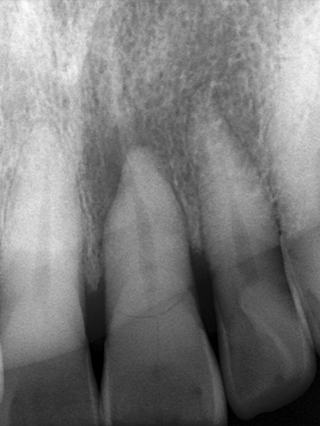
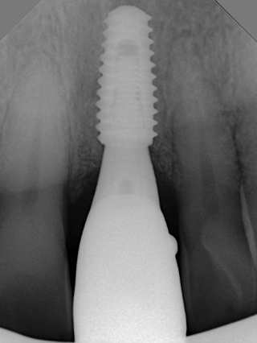
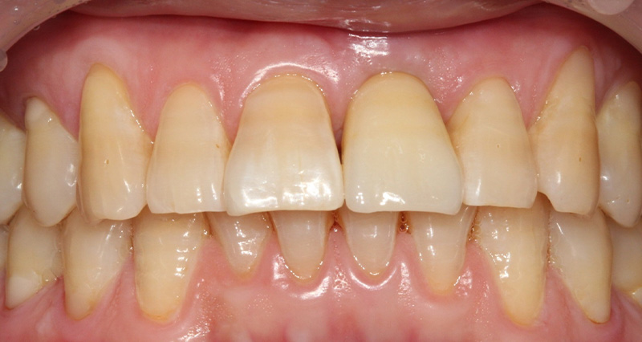
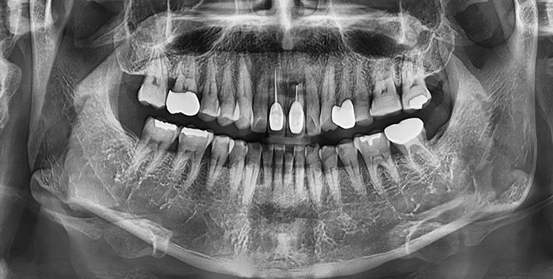
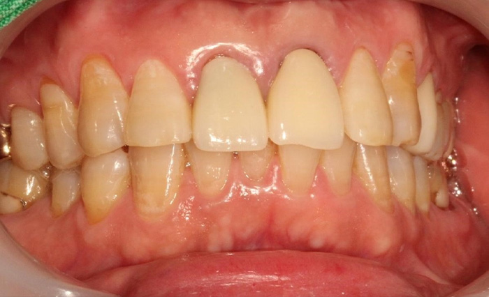
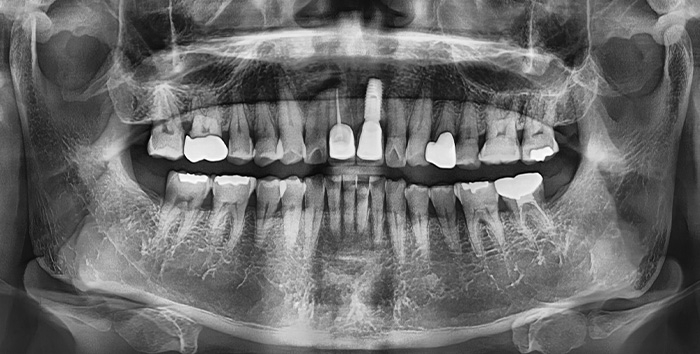
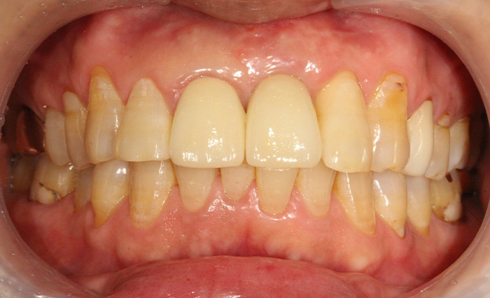

앞니 심미 임플란트
앞니 심미 임플란트란?
앞니는 잇몸뼈와 살이 얇기 때문에 치아가 빠진 후 쉽게 위축되어 심미적으로 만들기가 쉽지 않습니다.
섬세하고 정교한 발치 즉시 임플란트와 심미적인 지르코니아 크라운을 이용하여 내 치아보다 더 자연스러운 앞니 임플란트를 만드는 기술력으로 만족스러운 결과를 드립니다.
Nowon Yonseirian Dental Clinic
앞니 심미 임플란트 Case. 1
Anterior Aesthetic Implant



Nowon Yonseirian Dental Clinic
앞니 심미 임플란트 Case. 2
Anterior Aesthetic Implant


Before


After